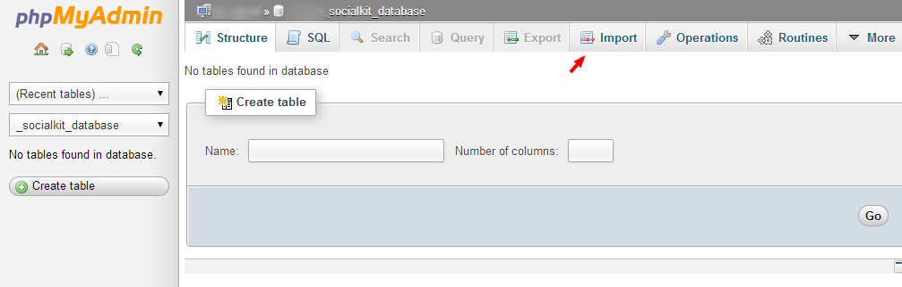
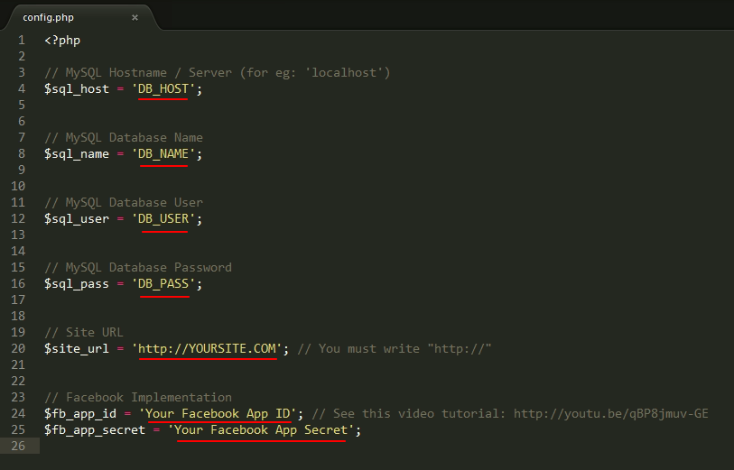

“SocialKit” Documentation by “ThemePhysics” v1.2
 SocialKit
SocialKit
Created: 22/10/2014
By: ThemePhysics
Email: themarvelkit@gmail.com
Thank you for purchasing SocialKit. If you have any questions that are beyond the scope of this help file, please feel free to contact me using this form.
Table of Contents
1) Preparation - top
Make sure you have the following:
- PHP 5.3 or more
- MySQLi Extension
- GD Library
2) Installation - top
Please follow these steps to setup SocialKit:
-
Import the 'SocialKit.SQL' file from the "MySQL" folder into your MySQL database using the import function available in MySQL phpMyadmin. Here's a preview of what your MySQL phpMyAdmin might look like and where to find the import function:
 -
Using a text editor, open the file 'config.php' located inside the "Script/assets/includes/" folder, and replace what's between the brackets (e.g: 'DB_NAME') with your MySQL settings. Here's a preview of the content of 'config.php', replace only the contents marked red:

For Facebook Login to work, you will need to create an app on Facebook. Watch the video tutorial below on how to implement Facebook Login:
- Upload the files from the "Script" folder on the FTP server (usually public_html folder when installing it on a domain).
- Set the CHMOD to 777 or 775 (depending on the server configuration) to the following folders: 'photos', 'assets/settings' and to all the files inside 'assets/settings' folder.
3) Configurations - top
Configurations and website management can be controlled using the admin panel. The admin panel link is labeled 'Admin' and is located in the footer section of every page. The default login username for admin is 'marvelkit' and the default login password is 'marvel123'. You can change login informations after logging in.
Short summary of admin panel features:
-
General Settings
Allows you to edit website settings and informations. -
User Settings
Allows you to change predefined settings about users and features to be enabled or disabled. -
Page Settings
Allows you to change predefined settings about pages and features to be enabled or disabled. -
Group Settings
Allows you to change predefined settings about groups and features to be enabled or disabled. -
Announcements
Allows you to announce news or informations to your Users. -
Themes
Allows you to change the whole website layout, the current theme enabled will have a highlighted button showing Actived. -
Statistics
Advanced user and site statistics (User Registered, Pages Created, Groups Created, Comments, Reports, Likes, etc). -
Manage User
Allows you to edit users (or a certain user), verify them, update user settings and informations or delete them. -
Manage Pages
Allows you to edit pages (or a certain page), verify them, update page settings and informations or delete them. -
Manage Groups
Allows you to edit groups (or a certain group), update group settings and informations or delete them. -
Manage Reports
Allows you to change predefined settings about users and features to be enabled or disabled. -
Manage Ads
Allows you to add advertisements in certain places on the website. -
Manage Admin Login
Update your admin login username and password. -
Log Out
Logs you out of the admin panel.
4) FAQ - top
-
Q: I want to modify a text or something about the design...
A: You can change anything visual from the theme located in: /themes/current-theme-name. PHP knowledge may require. -
Q: I want to add a new language to the script.
A: Make a copy of the original 'english.php' file into the 'assets/languages' folder, rename it into your language and then translate it. -
Q: I want to change the content of the Privacy Policy, Contact, Disclaimer and/or TOS page.
A: Open assets/sources/terms.php and edit the texts with your own terms, save and upload, done! -
Q: I have problems/questions related to the script, how can I contact you?
A: You can e-mail me using the contact form here: http://codecanyon.net/item/socialkit-social-networking-platform/8493571/support
5) Developers - top
As a developer, the only mandatory requirement is a valid SocialKit license key.
Themes
The theme folder must contain the following:
- info.php [contains theme informations such as author, version, etc]
- icon.png [Theme's icon]
- the rest of the required theme files are located in the default theme called 'grape'.
Recommendations:
- Theme folder should not contain any white spaces
- Make a copy of the original 'grape' theme and edit it, as it contains all the files required.
Copyright © 2014 SocialKit. All rights reserved.
By ThemePhysics.